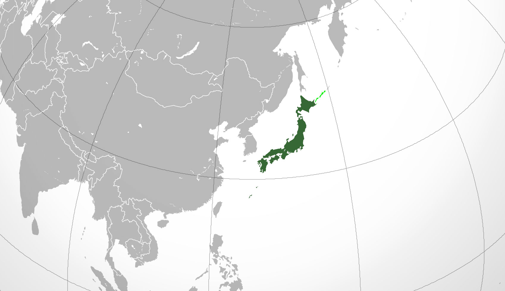

UBICACION
Japón es un archipiélago estratovolcánico compuesto por 374.744 km² de islas y 3.091 km² de agua y conformado por más de seis mil islas que se extienden a lo largo de la costa asiática este del océano Pacífico y en los archipiélagos de Ryukyu, Izu y Ogasawara. Según el censo de 2005 tiene 127,55 millones de habitantes.


El país está ubicado al noreste de China y de Taiwán (separado por el mar de China Oriental), levemente al este de Corea (separado por el mar del Japón) y al sur de Siberia, Rusia. Las cuatro islas principales, de norte a sur, son Hokkaidō, Honshu, Shikoku y Kyushu. La isla de Okinawa (600 km al sudoeste de Kyushu) les sigue en magnitud. Cerca del 73% del país es montañoso, cada isla cuenta con su cadena montañosa. La montaña más alta es el Monte Fuji (Fujisan), de 3.776 m de altura y le sigue Kitadake, con 3.193 m de altura. Debido a que existe tan poco terreno llano en Japón, muchas colinas y laderas son aprovechadas en su totalidad para el cultivo. Como se encuentra situada en una zona de mucha actividad volcánica resultan frecuentes temblores de pequeña magnitud y actividad volcánica ocasional para los que el país está altamente preparado.